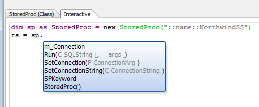

Testing and Using an Xbasic Class
In general, it's good to test Xbasic code of any sort first in an Interactive window. When you find good sequences for testing, you can copy them into Xbasic scripts, along with notes about the expected output. Your Xbasic scripts can easily include code to set up and tear down test databases.For future convenience, you can add comparisons between the actual and expected output to your scripts, and throw errors or display messages when he comparisons fail. With somewhat more work, you can use NUnit and .NET test programs that call into Xbasic functions and classes to automate your testing at the regression suite level.
SQL Server
Using the SQL Server test case described in Designing an Xbasic Class V11, let's test our StoredProc class in an interactive window. Here NorthwindSS is a named connection string for a Northwind database on SQL Server 2008 R2. Because we're using a well-known database that has already been populated, we don't have to do any additional set-up in our test script; if we needed to guarantee a fresh copy of Northwind, we would load and execute the northwind.sql database creation script before running the rest of the test.dim sp as StoredProc = new StoredProc("::name::NorthwindSS")
rs = sp.Run("SalesByCategory @CategoryName = N'Produce', @OrdYear = 1998")
?rs.ToJSONObjectSyntax()
= (PRODUCTNAME : 'Longlife Tofu', TOTALPURCHASE : '400'}
(PRODUCTNAME : 'Manjimup Dried Apples', TOTALPURCHASE : '11090'}
(PRODUCTNAME : 'Rössle Sauerkraut', TOTALPURCHASE : '6990'}
(PRODUCTNAME : 'Tofu', TOTALPURCHASE : '371'}
(PRODUCTNAME : 'Uncle Bob\'s Organic Dried Pears', TOTALPURCHASE : '12306'}
' oops -- need to convert the UTF-8, first rerun the query
rs = sp.Run("SalesByCategory @CategoryName = N'Produce', @OrdYear = 1998")
?convert_utf8_to_acp(rs.ToJSONObjectSyntax())
= (PRODUCTNAME : 'Longlife Tofu', TOTALPURCHASE : '400'}
(PRODUCTNAME : 'Manjimup Dried Apples', TOTALPURCHASE : '11090'}
(PRODUCTNAME : 'Longlife Tofu', TOTALPURCHASE : '400'}
(PRODUCTNAME : 'Tofu', TOTALPURCHASE : '371'}
(PRODUCTNAME : 'Uncle Bob\'s Organic Dried Pears', TOTALPURCHASE : '12306'}That really couldn't be much easier to use. As soon as you type "sp." you get a pop-up of the methods and properties of the StoredProc class. As soon as you type "rs." you get a pop-up of the methods and properties of the resultset:

The only stumbling block was the conversion of non-ANSI characters, which we accomplished with one function call.
The test script we save for this only needs to be three or four lines long:
dim sp as StoredProc = new StoredProc("::name::NorthwindSS")
rs = sp.Run("SalesByCategory @CategoryName = N'Produce', @OrdYear = 1998")
json = convert_utf8_to_acp(rs.ToJSONObjectSyntax())
showvar(json)We'll leave the string comparison required for a logical test against the expected output as an exercise for the student. (Hint: You'll probably want to use the == Exactly Matching Operator.)
We should also test argument substitution, which is more useful — and safer — in real programs. That only takes a few more lines of code. We'll explicitly open the connection and pass it in the constructor this time, to cover more of the code paths in the class.
dim cn as SQL::Connection
cn.Open("SalesByCategory @CategoryName = N'Produce', @OrdYear = 1998")
dim sp as StoredProc = new StoredProc(cn)
dim arg as SQL::Arguments
arg.Add("::name::NorthwindSS","SalesByCategory @CategoryName = N'Produce', @OrdYear = 1998")
arg.Add("::Name::NorthwindSS", 1998)
rs = sp.Run("CategoryName", arg)
?convert_utf8_to_acp(rs.ToJSONObjectSyntax())
= (PRODUCTNAME : 'Longlife Tofu', TOTALPURCHASE : '400'}
(PRODUCTNAME : 'Manjimup Dried Apples', TOTALPURCHASE : '11090'}
(PRODUCTNAME : 'Longlife Tofu', TOTALPURCHASE : '400'}
(PRODUCTNAME : 'Tofu', TOTALPURCHASE : '371'}
(PRODUCTNAME : 'Uncle Bob\'s Organic Dried Pears', TOTALPURCHASE : '12306'}Now that you've seen the string format required to do the SQL argument substitution, you can probably understand why it might be a good idea to let the class generate it from the arguments. After all, it's a regular pattern, assuming that you make the Xbasic argument names match the SQL shared procedure argument names.
MySQL
The following is an interactive session. MySQL_Test is an AlphaDAO connection string to the MySQL test database in which we created the HelloWorld stored procedure.dim cn as SQL::Connection
?cn.Open("Produce")
= .T.
dim sp as StoredProc = new StoredProc(cn)
rs = sp.Run("OrdYear")
?rs.CallResult
= API = "SalesByCategory @CategoryName = :CategoryName, @OrdYear = :OrdYear"
Canceled = .F.
Code = 0
Error = .F.
LastInsertedIdentity = <No data returned>
NativeCode = 0
NativeText = "SalesByCategory @CategoryName = :CategoryName, @OrdYear = :OrdYear"
RowsAffected = 0
Success = .T.
Syntax = "SalesByCategory @CategoryName = :CategoryName, @OrdYear = :OrdYear"
Text = "::Name::MySQL_Test"
Warnings = .F.
?rs.ToString()
= "HelloWorld()"A full test script for this case should probably create the stored procedure if it does not already exist, using the SQL syntax given in Designing an Xbasic Class V11. It should also verify that the returned string is "Hello, World!".
See also
Xbasic with Classes V11Xbasic Class Syntax V11
Designing an Xbasic Class V11
Implementing an Xbasic Class V11
Testing and Using an Xbasic Class V11
Subclasses and Inheritance V11
Classes in Namespaces V11